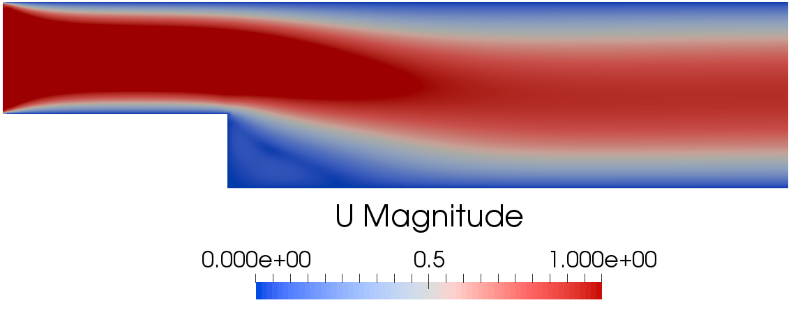

Introduction to tutorial 3
The problems consists of steady Navier-Stokes problem with parametrized viscosity. The physical problem is the backward facing step depicted in the following image:

At the inlet a uniform and constant velocity equal to 1 m/s is prescribed.
The ITHACAPODdict file
In this section are explained the main steps necessary to construct the tutorial N°3
The necessary header files
First of all let's have a look to the header files that needs to be included and what they are responsible for:
The header file of ITHACA-FV necessary for this tutorial
\*---------------------------------------------------------------------------*/
Implementation of the tutorial03 class
Then we can define the tutorial03 class as a child of the steadyNS class
The members of the class are the fields that needs to be manipulated during the resolution of the problem
Inside the class it is defined the offlineSolve method according to the specific parametrized problem that needs to be solved.
If the offline solve has already been performed than read the existing snapshots
else perform the offline solve where a loop over all the parameters is performed:
else
{
Vector<double> Uinl(0, 0, 0);
label BCind = 0;
for (label i = 0; i <
mu.rows(); i++)
{
}
}
See also the steadyNS class for the definition of the methods.
Definition of the main function
Once the tutorial03 class is defined the main function is defined, an example of type tutorial03 is constructed:
In this case the vector of parameter is read from a txt file
The inlet boundary is set:
example.inletIndex.resize(1, 2);
example.inletIndex(0, 0) = 0;
example.inletIndex(0, 1) = 0;
and the offline stage is performed:
and the supremizer problem is solved:
example.solvesupremizer();
In order to show the functionality of reading fields in this case the lifting function is read from a precomputed simulation with a unitary inlet velocity:
Then the snapshots matrix is homogenized:
example.computeLift(example.Ufield, example.liftfield, example.Uomfield);
and the modes for velocity, pressure and supremizers are obtained:
ITHACAPOD::getModes(example.supfield, example.supmodes, example.podex, example.supex, 1, NmodesSUPout);
then the projection onto the POD modes is performed with:
example.projectSUP("./Matrices", NmodesUproj, NmodesPproj, NmodesSUPproj);
the reduced object is constructed:
and the online solve is performed for some values of the viscosity:
Eigen::MatrixXd vel_now(2, 1);
vel_now(0, 0) = 1;
vel_now(1, 0) = 0;
for (label k = 0; k < 20; k++)
{
ridotto.nu = example.mu(k, 0);
ridotto.solveOnline_sup(vel_now);
Eigen::MatrixXd tmp_sol(ridotto.y.rows() + 1, 1);
tmp_sol(0) = k + 1;
tmp_sol.col(0).tail(ridotto.y.rows()) = ridotto.y;
ridotto.online_solution.append(tmp_sol);
}
The vel_now matrix in this case is not used since there are no parametrized boundary conditions.
The viscosity is set with the command:
ridotto.nu = example.mu(k,0)
finally the online solution stored during the online solve is exported to file in three different formats with the lines:
and the online solution is reconstructed and exported to file
ridotto.reconstruct_sup("./ITHACAoutput/Reconstruction/");
The plain program
Here there's the plain code
#include "forces.H"
#include "IOmanip.H"
{
public:
:
{}
{
Vector<double> inl(0, 0, 0);
List<scalar> mu_now(1);
{
}
else
{
Vector<double> Uinl(0, 0, 0);
label BCind = 0;
for (label i = 0; i <
mu.rows(); i++)
{
}
}
}
};
int main(
int argc,
char *argv[])
{
int NmodesUout = para.
ITHACAdict->lookupOrDefault<
int>(
"NmodesUout", 15);
int NmodesPout = para.
ITHACAdict->lookupOrDefault<
int>(
"NmodesPout", 15);
int NmodesSUPout = para.
ITHACAdict->lookupOrDefault<
int>(
"NmodesSUPout", 15);
int NmodesUproj = para.
ITHACAdict->lookupOrDefault<
int>(
"NmodesUproj", 10);
int NmodesPproj = para.
ITHACAdict->lookupOrDefault<
int>(
"NmodesPproj", 10);
int NmodesSUPproj = para.
ITHACAdict->lookupOrDefault<
int>(
"NmodesSUPproj", 10);
word filename("./par");
example.inletIndex.resize(1, 2);
example.inletIndex(0, 0) = 0;
example.inletIndex(0, 1) = 0;
example.offlineSolve();
example.solvesupremizer();
example.computeLift(example.Ufield, example.liftfield, example.Uomfield);
ITHACAPOD::getModes(example.supfield, example.supmodes, example.podex, example.supex, 1, NmodesSUPout);
example.projectSUP("./Matrices", NmodesUproj, NmodesPproj, NmodesSUPproj);
Eigen::MatrixXd vel_now(2, 1);
vel_now(0, 0) = 1;
vel_now(1, 0) = 0;
for (label k = 0; k < 20; k++)
{
ridotto.nu = example.mu(k, 0);
ridotto.solveOnline_sup(vel_now);
Eigen::MatrixXd tmp_sol(ridotto.y.rows() + 1, 1);
tmp_sol(0) = k + 1;
tmp_sol.col(0).tail(ridotto.y.rows()) = ridotto.y;
ridotto.online_solution.append(tmp_sol);
}
ridotto.reconstruct_sup("./ITHACAoutput/Reconstruction/");
exit(0);
}
 1.8.14
1.8.14